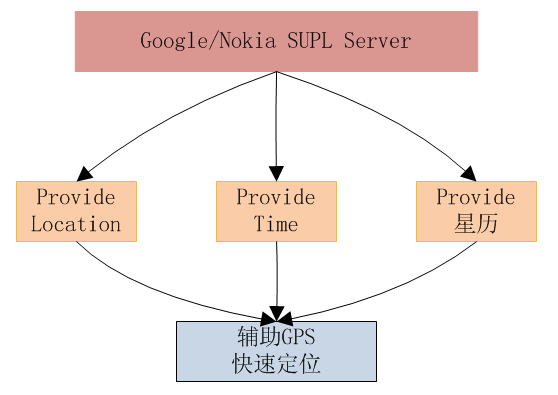
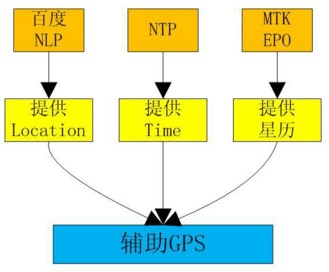
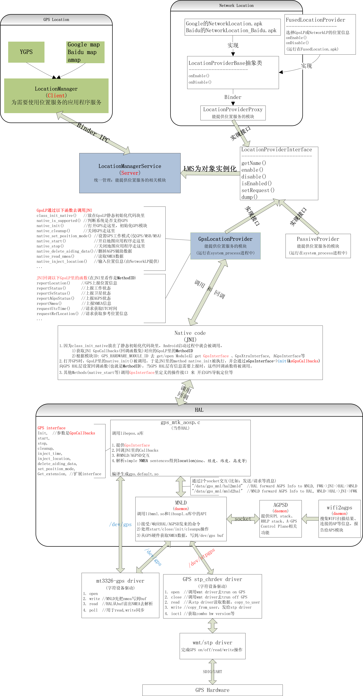

本文主要介绍手机上几种常见的定位技术，以及 Android 5.1 上的 MTK GPS。
几种常见的定位技术介绍
纯 GPS 定位
数据直接来源于卫星，即搜星，然后下载卫星数据。通过卫星的位置（从卫星上接收），卫星到接收机的距离来测算接收机的位置
在无辅助信息的条件下用 GPS 定位，需捕获到至少四颗卫星（因为卫星和接收机都有时间差，4 个未知数需 4 个方程才能解）
蜂窝基站 / WIFI定位
蜂窝基站定位原理：根据 CellID (基站 ID )，去对应的数据库搜索已经标识好了的经纬度，然后根据经纬度去地图供应商查询对应的地图和地址描述
WIFI 定位原理：扫描周围所有的 AP，获取 AP 的 MAC Address (说明下，不是 IP Address 哦)，在连网前提下，就可以去地图服务器（比如 Baidu 地图服务器，有这些 MAC Address 的经纬度）查询这些 MAC Address 的座标，并结合每个 AP 的信号强弱，计算出手机的大致地理位置并返回给用户（ Baidu 地图），从而完成定位
AGPS定位
AGPS 是标准的在线辅助手段，简单点说就是 GPS + 辅助数据，需要额外的辅助服务器支持。
原理：通过网络连接到 AGPS SERVER，从 AGPS SERVER 获取辅助数据（包括参考时间，参考位置，星历和历书），从而缩小 TTFF （Time To First Fix，首次定位时间）
如图：

离线辅助定位
通过预测技术，将未来 N 天所有 GPS 卫星的 ephemeris （星历数据）放到 XX 服务器，然后手机端可以从该 XX 服务器下载，这样，在没有 A-GPS 去 supl 服务器下载卫星星历数据的情况下，也可以实现快速定位。
其存在目的就是缩小TTFF，提高定位速度。
比如 MTK EPO 原理：通过预测技术，将未来 30 天所有 GPS 卫星的 ephemeris 放到 mtk 服务器（epo.mediatek.com），当打开 GPS 和网络时，就会去下载预测的未来 30 天内所有卫星星历，15 天后只要在打开 GPS 和网络前提下就会自动去同步一下。
如图：

Android5.1 上的 MTK GPSandroid_book
下图是 Android 5.1 上 GPS 代码框架图：

参考资料
android_book. 《深入理解 Android：Wi-Fi，NFC 和 GPS》第九章 深入理解 GPS ↩
This is copyright.